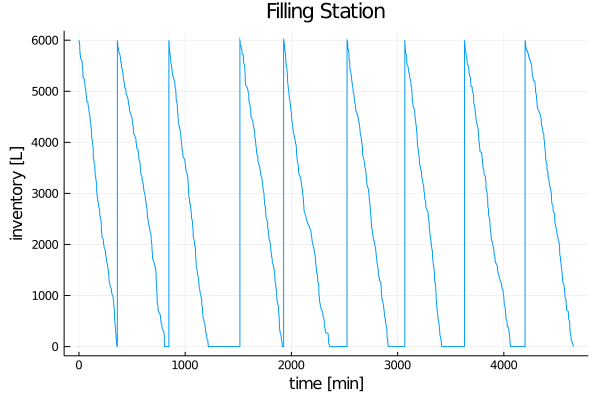
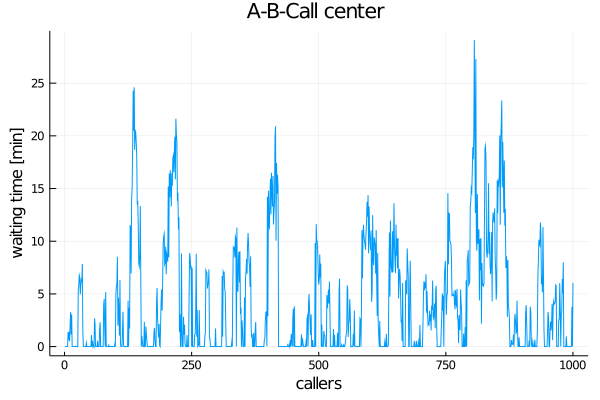

Introduction
DiscreteEvents.jl allows you to
- setup virtual or realtime clocks,
- schedule events (Julia functions or expressions) to them,
- run clocks to trigger events.
Preparations
DiscreteEvents.jl is a registered package. You install it to your Julia environment with
] add DiscreteEventsYou can install the development version with
] add https://github.com/pbayer/DiscreteEvents.jlYou can then load it with
julia> using DiscreteEventsSetup a clock
Setting up a virtual clock is as easy as
julia> clock = Clock()
Clock 1: state=:idle, t=0.0, Δt=0.01, prc:0
scheduled ev:0, cev:0, sampl:0You created a Clock variable clk with a clock at thread 1 with pretty much everything set to 0, without yet any scheduled events (ev), conditional events (cev) or sampling events (sampl).
You can now schedule events to your clock. We demonstrate how it works with a couple of small simulations.
Inventory Control Problem
An inflammable is stored in a special tank at a filling station. Customers arrive according to a Poisson process with rate $λ$ and ask for an amount $\,X \sim \mathcal{N}(μ, σ^2)\,|\, a<X\,$ of the product. Any demand that cannot be met is lost. Opportunities to replenish the stock in the tank occur according to a Poisson process with rate $ρ$. The two Poisson processes are assumed to be independent of each other. For security reasons replenishment is only allowed when the tank is empty. At those opportunities it is replenished with a fixed amount $Q$. [1]
We are interested to study the stock in the tank and the fraction of demand that is lost.
First we setup a data structure for a simulation:
using DiscreteEvents, Distributions, Random
mutable struct Station
q::Float64 # fuel amount
t::Vector{Float64} # time vector
qt::Vector{Float64} # fuel/time vector
cs::Int # customers served
cl::Int # customers lost
qs::Float64 # fuel sold
ql::Float64 # lost sales
endWe have two events: customer and replenishment happening in two interacting Poisson processes:
function customer(c::Clock, s::Station, X::Distribution)
function fuel(s::Station, x::Float64)
s.q -= x # take x from tank
push!(s.t, c.time) # record time, amount, customer, sale
push!(s.qt, s.q)
s.cs += 1
s.qs += x
end
x = rand(X) # calculate demand
if s.q ≥ x # demand can be met
fuel(s, x)
elseif s.q ≥ a # only partially in stock
s.ql += x - s.q # count the loss
fuel(s, s.q) # give em all we have
else
s.cl += 1 # count the lost customer
s.ql += x # count the lost demand
end
end
function replenish(c::Clock, s::Station, Q::Float64)
if s.q < a
push!(s.t, c.time)
push!(s.qt, s.q)
s.q += Q
push!(s.t, c.time)
push!(s.qt, s.q)
end
endWe pass our event functions a Clock variable in order to access the clock's c.time.
Now we setup our constants and variables, wrap the functions in fun and schedule them as event!s and run! the clock for 5000 virtual minutes:
Random.seed(123)
const λ = 0.5 # ~ every two minutes a customer
const ρ = 1/180 # ~ every 3 hours a replenishment truck
const μ = 30 # ~ mean demand per customer
const σ = 10 # standard deviation
const a = 5 # minimum amount
const Q = 6000.0 # replenishment amount
const M₁ = Exponential(1/λ) # customer arrival time distribution
const M₂ = Exponential(1/ρ) # replenishment time distribution
const X = TruncatedNormal(μ, σ, a, Inf) # demand distribution
clock = Clock() # create a clock, a fuel station and events
s = Station(Q, Float64[0.0], Float64[Q], 0, 0, 0.0, 0.0)
event!(clock, fun(replenish, clock, s, Q), every, M₂)
event!(clock, fun(customer, clock, s, X), every, M₁)
println(run!(clock, 5000)) # run the clock
@show fuel_sold = s.qs;
@show loss_rate = s.ql/s.qs;
@show served_customers = s.cs;
@show lost_customers = s.cl;run! finished with 2525 clock events, 0 sample steps, simulation time: 5000.0
fuel_sold = s.qs = 53999.999999999956
loss_rate = s.ql / s.qs = 0.3962195131252451
served_customers = s.cs = 1789
lost_customers = s.cl = 708We sold 9 tanks of fuel to 1789 customers. But we could have served 708 more customers and sell nearly 40% more fuel. Clearly we have some improvement potential:
using Plots
plot(s.t, s.qt, title="Filling Station", xlabel="time [min]", ylabel="inventory [L]", legend=false)
savefig("invctrl.png")
If we could manage to replenish immediately after the tank is empty, we would be much better off.
A-B Call Center Problem
DiscreteEvents also provides process-based simulation. A process is a typical sequence of events. This is particularly useful if we can describe our system in such terms.
One example is a call center with two servers, Able and Baker and a line for incoming calls. Able is more experienced and can provide service faster than Baker. We have some assumptions about arrival and service time distributions. We want to know if the system works and how long customers have to wait [2].
First we describe some data structures for our system:
using DiscreteEvents, Distributions, Random
mutable struct Caller
id::Int
t₁::Float64 # arrival time
t₂::Float64 # beginning of service time
t₃::Float64 # end of servive time
end
mutable struct Server
id::Int
S::Distribution # service time distribution
tbusy::Float64 # cumulative service time
endWe describe the processes in our system as two functions serve and arrive:
function serve(c::Clock, s::Server, input::Channel, output::Vector{Caller}, limit::Int)
call = take!(input) # take a call
call.t₂ = c.time # record the beginning of service time
delay!(c, s.S) # delay for service time
call.t₃ = c.time # record the end of service time
s.tbusy += call.t₃ - call.t₂ # log service time
push!(output, call) # hang up
call.id ≥ limit && stop!(c)
end
function arrive(c::Clock, input::Channel, count::Vector{Int})
count[1] += 1
put!(input, Caller(count[1], c.time, 0.0, 0.0))
endWe implement our caller queue as a Channel eventually blocking a process if it calls take!. The serve function calls a delay! from the Clock. This suspends a process for the required simulation time. Note that the serve process stop!s the clock after the last caller is finished.
Next we initialize our constants, setup a simulation environment, wrap our servers in Prc and start them as process!es. Arrivals are an event-based Poisson process as in the first example [3]. We run! the clock for enough time:
Random.seed!(123)
const N = 1000
const M_arr = Exponential(2.5)
const M_a = Exponential(3)
const M_b = Exponential(4)
clock = Clock()
input = Channel{Caller}(Inf)
output = Caller[]
s1 = Server(1, M_a, 0.0)
s2 = Server(2, M_b, 0.0)
process!(clock, Prc(1, serve, s1, input, output, N))
process!(clock, Prc(2, serve, s2, input, output, N))
event!(clock, fun(arrive, clock, input, count), every, M_arr)
run!(clock, 5000)"run! halted with 2005 clock events, 0 sample steps, simulation time: 2464.01"The clock stopped at 2464. We served 1000 callers in 2464 virtual minutes. This is an average lead time of 2.5 min. Doesn't seem so bad.
julia> s1.tbusy / clock.time
0.7256119737495218
julia> s2.tbusy / clock.time
0.7422549861860762Also our servers have been busy only about 73% of the time. Could we give them some other work to do? How about waiting times for callers?
using Plots
wt = [c.t₂ - c.t₁ for c in output]
plot(wt, title="A-B-Call center ", xlabel="callers", ylabel="waiting time [min]", legend=false)
savefig("ccenter.png")
Given the average values, something unexpected emerges: The responsiveness of our call center is not good and waiting times often get way too long. If we want to shorten them, we must improve our service times or add more servers.
Evaluation
It is easy to simulate discrete event systems such as continuous-time stochastic processes or queueing systems with DiscreteEvents. It integrates well with Julia.
Further examples
You can find more examples at DiscreteEventsCompanion.
- 1This is a modified version of example 4.1.1 in Tijms: A First Course in Stochastic Models, Wiley 2003, p 143ff
- 2This is a simplified version of the Able-Baker Call Center Problem in Banks, Carson, Nelson, Nicol: Discrete-Event System Simulation, Pearson 2005, p 35 ff
- 3The different approaches to modeling: event-based and process-based can be combined.